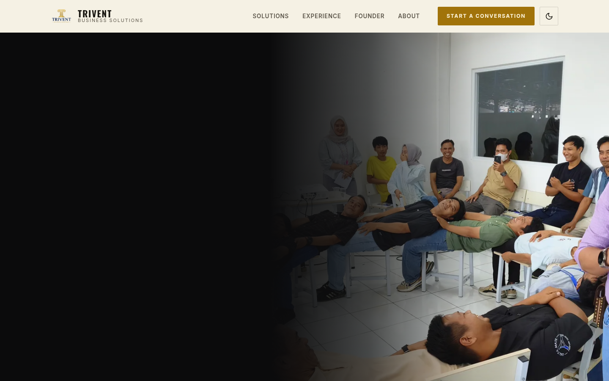
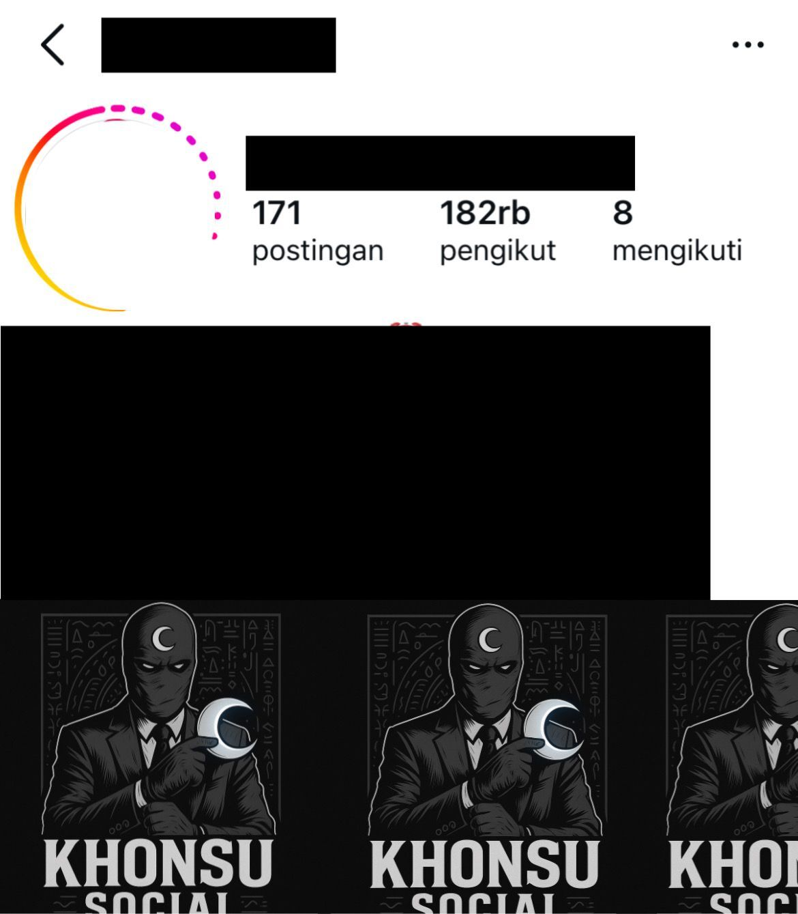
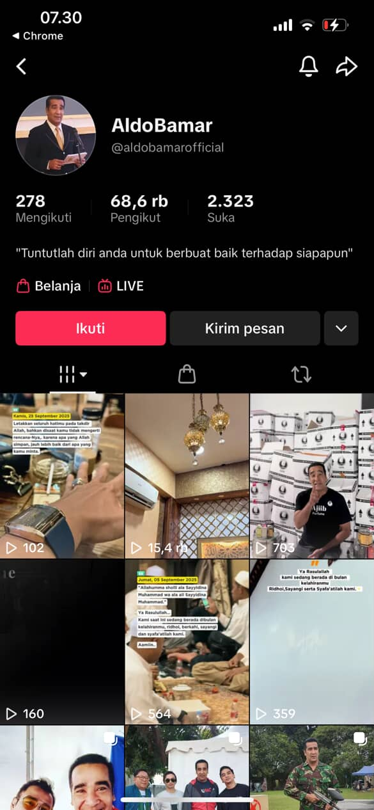
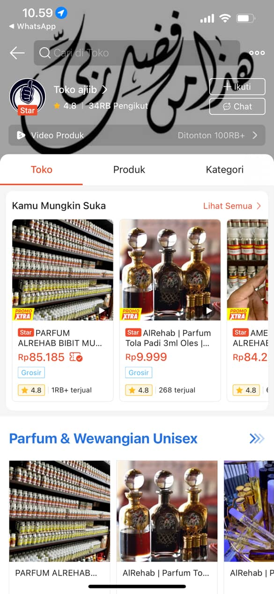

TRIVENT Business Solutions
Corporate website untuk PT Trivent Solusi Bisnis tentang Human & Business Transformation. Tautan mengikuti preview yang diberikan pemilik.
Selected work
Kredit dan kategori dipisahkan agar materi project tidak terlihat seperti klaim yang belum disetujui.
Pinned first

Corporate website untuk PT Trivent Solusi Bisnis tentang Human & Business Transformation. Tautan mengikuti preview yang diberikan pemilik.
Personal projects
Tautan ini merupakan project mandiri atau portofolio yang sudah tercantum pada situs sebelumnya.
Landing page social links milik Khonsu Socials.
Link portofolio yang tercantum pada situs sebelumnya. Kredit dan izin publikasi perlu dikonfirmasi sebelum diklasifikasikan sebagai Client Project.
Social media work


